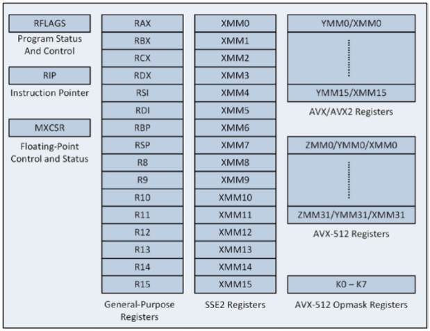

A very good summary of Assembly
https://cs61.seas.harvard.edu/site/2020/Asm/
https://en.wikibooks.org/wiki/X86_Assembly/X86_Architecture
It's just a syntactic difference. The result of both will be the same x86 machine code.
AT&T immediate operands use a $ to denote them, whereas Intel immediate operands are undelimited. Thus, when referencing the decimal value 4
AT&T: $4
Intel: 4
AT&T prefaces register names with a %, while Intel does not.
Thus, referencing the EAX register
AT&T: %eax
Intel: eax
AT&T syntax uses the opposite order for source and destination operands.
To move the decimal value 4 to the EAX register,
AT&T: movl $4, %eax
Intel: mov eax, 4
AT&T syntax uses a separate character at the end of mnemonics to reference the data size used in the operation, whereas in Intel syntax the size is declared as a separate operand.
AT&T: movl $test, %eax
Intel: mov eax, dword ptr test
Long calls and jumps use a different syntax to define the segment and offset values.
AT&T: ljmp section, offset
Intel: jmp section:offset
It is the most commonly taught x86 assembler. Unfortunately, its use is limited to Windows. The Microsoft assembler is included with Microsoft C++ compilers.
MASM syntax is somewhat messy and inconsistent due to a heritage that dates back to the very first assemblers for the 8086 processor. Microsoft is still maintaining MASM in order to provide a complete set of development tools for Windows
nasm is a free cross-platform x86 assembler which supports all the common x86 operating systems – Linux, MacOS X and Windows.
The syntax is more clear and consistent than MASM syntax. NASM is updated regularly with new instruction sets. NASM is currently the best multi-platform assembler and is widely used by assembly programmers.
Unlike the GNU assembler, it uses the same Intel syntax that masm does. Still, there are some differences. https://left404.com/2011/01/04/converting-x86-assembly-from-masm-to-nasm-3/
GAS, the Gnu assembler is part of the Gnu Binutils package that is included with most distributions of Linux, BSD and Mac OS X.
The Gnu and Clang compilers produce assembly output that goes through the Gnu assembler before it is linked.
The asm keyword allows you to embed assembler instructions within C code.
Different compilers have different syntaxes for inline assembly. It mainly has MASM style and Gnu-style.
In Gnu-style inline assembly, assembly code is entered as a string constant which is passed through to the assembler with very little change. The default syntax is the AT&T syntax that the Gnu assembler uses.
In gcc, with extended asm you can read and write C variables from assembler and perform jumps from assembler code to C labels. Extended asm syntax uses colons (‘:’) to delimit the operand parameters after the assembler template:
asm asm-qualifiers ( AssemblerTemplate
: OutputOperands
[ : InputOperands
[ : Clobbers ] ])
The asm keyword is a GNU extension. When writing code that can be compiled with -ansi and the various -std options, use __asm__ instead of asm.

MOV: copy data from source to destination
Approach 1:
.data
count WORD 1
.code
mov eax, 0
mov ax, count
Approach 2:
movzx (move with zero-extended)
.data
byteVal BYTE 100001111b
.code
movzx ax, byteVal ; ax = 0000000010001111b
movsx (move with sign-extend)
.data
byteVal BYTE 100001111b
.code
movzx ax, byteVal ; ax = 1111111110001111b
numArray BYTE 10h, 20h, 30h, 40h
mov al, numArray ; AL = 10h
mov al, [numArray +1] ; AL = 20h
mov al, [numArray +2] ; AL = 30h
Effective address = baseReg + IndexReg * ScaleFactor + Disp (result is always 32bit)
Examples:
Disp mov eax,[MyVal]
BaseReg mov eax,[ebx]
BaseReg+Disp mov eax,[ebx+12]
BaseReg+IndexReg*SF+Disp mov eax,[ebx+esi*4+20]
etc ...
modifying a 32-bit partial register will set the rest of the register (bit 32-63) to zero
modifying an 8-bit or 16-bit partial register does not affect the rest of the register.
Example 3.1. 8, 16, 32 and 64 bit registers
mov rax, 1111111111111111H ; rax = 1111111111111111H
mov eax, 22222222H ; rax = 0000000022222222H
mov ax, 3333H ; rax = 0000000022223333H
mov al, 44H ; rax = 0000000022223344H
There is a good reason for this inconsistency. Setting the unused part of a register to zero is more efficient than leaving it unchanged because this removes a false dependence on previous values. But the principle of resetting the unused part of a register cannot be extended to 16 bit and 8 bit partial registers because this would break the backwards compatibility with 32-bit and 16-bit modes.
The only instruction that can have a 64-bit immediate data operand is MOV. Other integer instructions can only have a 32-bit sign-extended operand.
movss which moves 32 bit floating point values movsd which moves 64 bit floating point values (doubles)
Aligned data means that it is on a 16 byte boundary in memory.
Aligned loads are up to 4x faster
Your program will fail with a segmentation fault if you attempt to use an aligned move to an unaligned address.
The full form of a memory operand is offset(base,index,scale), which refers to the address offset + base + index*scale.
movl 0x18(%rax,%rbx,4), %ecx, the address %rax + 0x18 + %rbx*4 is computed, then immediately dereferenced: the 4-byte value located there is loaded into %ecx.leaq 0x18(%rax,%rbx,4), %rcx, the same address is computed, but it is not dereferenced. Instead, the computed address is moved into register %rcx.jmp label
where label is a label in the program 's text segment . The assembler will generate a rip relative jump instruction.
when status flag is true
cmp eax, 0
jz someLabel ; jump if zero, which means zero flag (ie., ZF=1) is on
jnz someLablel ; jump if not zero, which means zero flag is not on
je someLabel ; jump if equal, which means equal flag is on
loop is exactly like dec ecx / jnz, except it doesn't set flags.
But it is (about 5 times) slower than dec ecx/jnz, avoid using it. https://stackoverflow.com/questions/35742570/why-is-the-loop-instruction-slow-couldnt-intel-have-implemented-it-efficiently
Avoid JECXZ and LOOP because they are not so efficient on the more modern architectures. (agner.org/optimize/optimizing_assembly.pdf page 89)
Repeated String operations
The flags register is affected by most instruction as a byproduct of the operation
There are some instruction whose whole purpose is to change the flags register, include CMP, AND, OR, XOR, NOT, and NEG
0 CF : Carry Flag. Set if the last arithmetic operation carried (addition) or borrowed (subtraction) a bit beyond the size of the register. This is then checked when the operation is followed with an add-with-carry or subtract-with-borrow to deal with values too large for just one register to contain.
2 PF : Parity Flag. Set if the number of set bits in the least significant byte is a multiple of 2.
4 AF : Adjust Flag. Carry of Binary Code Decimal (BCD) numbers arithmetic operations.
6 ZF : Zero Flag. Set if the result of an operation is Zero (0).
7 SF : Sign Flag. Set if the result of an operation is negative.
8 TF : Trap Flag. Set if step by step debugging.
9 IF : Interruption Flag. Set if interrupts are enabled.
10 DF : Direction Flag. Stream direction. If set, string operations will decrement their pointer rather than incrementing it, reading memory backwards.
11 OF : Overflow Flag. Set if signed arithmetic operations result in a value too large for the register to contain.
12-13 IOPL : I/O Privilege Level field (2 bits). I/O Privilege Level of the current process.
14 NT : Nested Task flag. Controls chaining of interrupts. Set if the current process is linked to the next process.
16 RF : Resume Flag. Response to debug exceptions.
17 VM : Virtual-8086 Mode. Set if in 8086 compatibility mode.
18 AC : Alignment Check. Set if alignment checking of memory references is done.
19 VIF : Virtual Interrupt Flag. Virtual image of IF.
20 VIP : Virtual Interrupt Pending flag. Set if an interrupt is pending.
21 ID : Identification Flag. Support for CPUID instruction if can be set.
Classically, x86 processors have done FPU operations on a separate floating-point coprocessor (known as a floating-point unit, or FPU), the x87.
x87 FPU instructions are all the ones whose mnemonics begin with f, including FADD, FMUL, FDIV, FLD, FSTP, etc.
However, the x87 FPU is rarely used anymore for floating-point operations. Although it is still there, it has effectively been superseded by a SIMD unit that is both easier to program for and (in general) more efficient.
Two areas that X87 might still be used:
For hand-written asm, x87 has some instructions that don't exist in the SSE instruction set. It's all trigonometric stuff like fsin, fcos, fatan, fatan2 and some exponential/logarithm stuff.
With gcc -O3 -ffast-math -mfpmath=387, GCC9 will still actually inline sin(x) as an fsin instruction, regardless of what the implementation in libm would have used. (https://godbolt.org/z/Euc5gp).
If your code spends most of the time doing trigonometry, you may see a performance gain or loss if you use x87, depending on whether your standard math-library implementation using SSE1/SSE2 is faster or slower than the slow microcode for fsin on whatever CPU you're using.
x87 FPU supported a special "long double" format, with 80 bits of precision. SSE supports only single-precision (32-bit), while SSE2 added support for double-precision (64-bit) values. If you absolutely need extended precision, then the x87 is your best option. (At the level of individual instructions, it is comparable in speed to the SIMD units operating on scalar values.)